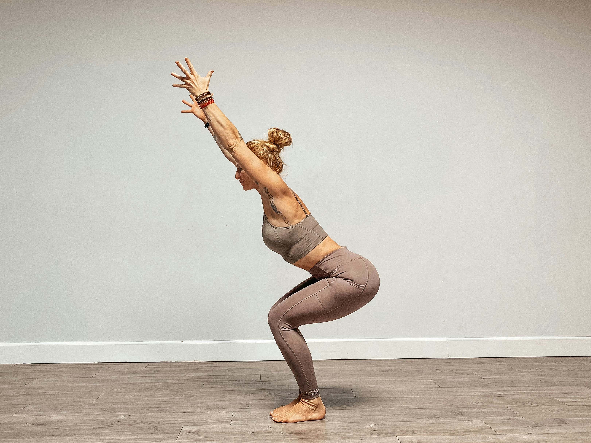
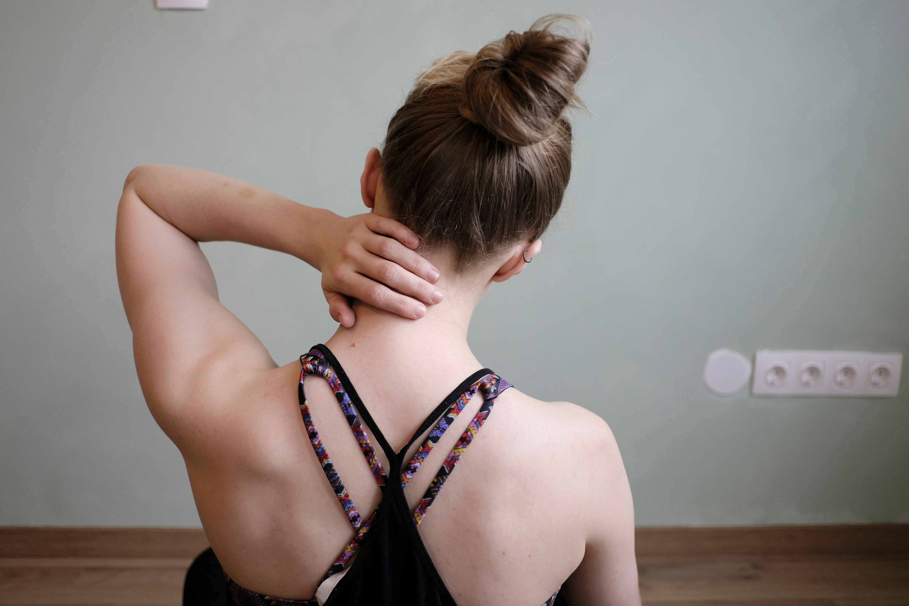

Good posture and back painမှန်ကန်သော ကိုယ်နေဟန်ထားနှင့် ခါးနာခြင်း

The doctor's view
ဆရာဝန်၏ အမြင်
Because so many people now spend long hours at a computer, a phone or a desk, back and neck pain have become frequent complaints.
ယနေ့ခေတ်တွင် လူအများစုသည် ကွန်ပျူတာ၊ ဖုန်းနှင့် စားပွဲပေါ်တွင် အချိန်ကြာမြင့်စွာ အလုပ်လုပ်ကြသောကြောင့် ခါးနာခြင်းနှင့် လည်ပင်းနာခြင်းများကို မကြာခဏ ခံစားလာကြရပါသည်။
Posture means how you hold your body when sitting, standing, walking and sleeping. With good posture the spine stays in its natural alignment and the workload is spread evenly across the muscles. That reduces the pressure on your joints and protects the back and spine for years to come.
ကိုယ်နေဟန်ထားဆိုသည်မှာ ထိုင်ခြင်း၊ ရပ်ခြင်း၊ လမ်းလျှောက်ခြင်းနှင့် အိပ်ခြင်းတို့တွင် ခန္ဓာကိုယ်ကို မည်သို့ထားရှိထားသည်ကို ဆိုလိုပါသည်။ မှန်ကန်သော Posture ရှိပါက ကျောရိုးသည် သဘာဝအတိုင်း တည်ငြိမ်နေပြီး ကြွက်သားများပေါ်ရှိ အလုပ်ပမာဏကို မျှတစေပါသည်။ ထို့ကြောင့် အရိုးအဆစ်များပေါ်ရှိ ဖိအားကို လျှော့ချပေးပြီး ခါးနှင့် ကျောရိုးကျန်းမာရေးကို ရေရှည်ကာကွယ်ပေးနိုင်ပါသည်။
What poor posture leads to
ကိုယ်နေဟန်ထား မမှန်ကန်ခြင်း၏ ဆိုးကျိုးများ

Back pain
ခါးနာခြင်း
Sitting hunched over for long periods loads the spine and can bring on back pain.
အချိန်ကြာမြင့်စွာ ကွေး၍ထိုင်ခြင်းသည် ကျောရိုးပေါ်တွင် ဖိအားများစေပြီး ခါးနာခြင်း ဖြစ်စေနိုင်ပါသည်။

Neck and shoulder pain
လည်ပင်းနှင့် ပခုံးနာခြင်း
Looking down at a phone, or curling forward at a computer, tightens the neck and shoulder muscles.
ဖုန်းကို အောက်ငုံ့ကြည့်ခြင်း၊ ကွန်ပျူတာရှေ့တွင် ကိုယ်ကိုကွေးထားခြင်းတို့သည် လည်ပင်းနှင့် ပခုံးကြွက်သားများကို တင်းကျပ်စေပါသည်။
Sitting properly at a computer
ကွန်ပျူတာအသုံးပြုရာတွင် မှန်ကန်သော ကိုယ်နေဟန်ထား
Since most of us now spend hours at a computer or laptop, how you sit matters a great deal.
ယနေ့ခေတ်တွင် လူအများစုသည် ကွန်ပျူတာနှင့် Laptop များကို အချိန်ကြာမြင့်စွာ အသုံးပြုကြသောကြောင့် ထိုင်ပုံထိုင်နည်း မှန်ကန်ရန် အလွန်အရေးကြီးပါသည်။

Sit with your back straight
ထိုင်ပုံမှန်ကန်စွာ ထားပါ
Keep your back straight and your shoulders relaxed, with both feet flat on the floor.
ထိုင်သောအခါ ကျောကို ဖြောင့်ဖြောင့်ထားပြီး ပခုံးများကို လျှော့ထားသင့်ပါသည်။ ခြေထောက်များကို မြေပြင်ပေါ်တွင် အပြည့်အဝ ထောက်ထားသင့်ပါသည်။
Adjust the screen height
Screen အမြင့်ကို ချိန်ညှိပါ
The monitor should sit at roughly eye level. Avoid having to look down at it.
ကွန်ပျူတာမျက်နှာပြင်သည် မျက်လုံးအဆင့်နှင့် တန်းတူနီးပါးရှိသင့်ပါသည်။ အောက်ငုံ့ကြည့်နေရခြင်းကို ရှောင်ကြဉ်ပါ။

Take breaks
အနားယူချိန် ထားပါ
Rather than staying in one position, get up and move every 30 to 60 minutes.
တစ်နေရာတည်းတွင် အချိန်ကြာကြာ မထိုင်ဘဲ ၃၀ မိနစ်မှ ၁ နာရီအတွင်း ခဏထပြီး လှုပ်ရှားပေးသင့်ပါသည်။
Exercises that ease back pain
ခါးနာခြင်းကို လျှော့ချနိုင်သော လေ့ကျင့်ခန်းများ
Gentle movement strengthens the muscles around the spine and can reduce back pain.
ပေါ့ပါးသော ကိုယ်လက်လှုပ်ရှားမှုများသည် ကျောရိုးပတ်ဝန်းကျင်ရှိ ကြွက်သားများကို အားကောင်းစေပြီး ခါးနာခြင်းကို လျှော့ချပေးနိုင်ပါသည်။

Stretching
Stretching လေ့ကျင့်ခန်း
Gently stretching the back and leg muscles relieves muscular tightness.
ခါးနှင့် ခြေထောက်ကြွက်သားများကို ဖြည်းညှင်းစွာ ဆန့်ထုတ်ပေးခြင်းသည် ကြွက်သားတင်းကျပ်မှုကို လျှော့ချပေးပါသည်။

Walking
လမ်းလျှောက်ခြင်း
Walking regularly increases overall movement and helps maintain spinal health.
ပုံမှန်လမ်းလျှောက်ခြင်းသည် ခန္ဓာကိုယ်လှုပ်ရှားမှုကို တိုးစေပြီး ကျောရိုးကျန်းမာရေးကို ထိန်းသိမ်းပေးပါသည်။

Core strengthening
Core Muscle လေ့ကျင့်ခြင်း
Stronger abdominal and lower-back muscles support the spine and help prevent back pain.
ဝမ်းဗိုက်နှင့် ခါးပတ်လည်ကြွက်သားများ အားကောင်းလာပါက ကျောရိုးကို ထောက်ပံ့ပေးနိုင်ပြီး ခါးနာခြင်းကို ကာကွယ်နိုင်ပါသည်။
Learn moreအသေးစိတ် လေ့လာရန်
- Looking down at your phone for long stretches puts pressure on the neck and spine.
- Sitting for hours without moving weakens the muscles and brings on back pain.
- Lifting heavy things with poor form can injure the back and spine.
- ဖုန်းကို အချိန်ကြာမြင့်စွာ အောက်ငုံ့ကြည့်ခြင်းသည် လည်ပင်းနှင့် ကျောရိုးပေါ်တွင် ဖိအားများစေနိုင်ပါသည်။
- လှုပ်ရှားမှုမရှိဘဲ အချိန်ကြာမြင့်စွာ ထိုင်နေခြင်းသည် ကြွက်သားများအားနည်းစေပြီး ခါးနာခြင်းကို ဖြစ်စေနိုင်ပါသည်။
- အလေးအများကြီးကို ကိုယ်နေဟန်ထားမမှန်ဘဲ မခြင်းသည် ခါးနှင့် ကျောရိုးကို ထိခိုက်စေနိုင်ပါသည်။
- Use a chair with a backrest so your lower back is supported.
- When lifting, bend at the knees rather than the waist.
- Choose a mattress that is firm enough to support you.
- Keep your weight in a healthy range.
- ကျောမှီရှိသော ထိုင်ခုံကို အသုံးပြုပြီး ခါးကို ထောက်ပံ့ပေးပါ။
- အလေးမသောအခါ ခါးကိုမကွေးဘဲ ဒူးကို ကွေး၍ မပါ။
- အိပ်ရာတွင် မာသင့်ရုံမာသော မွေ့ရာကို ရွေးချယ်ပါ။
- ကိုယ်အလေးချိန်ကို ပုံမှန်ထိန်းသိမ်းပါ။
When to see a doctor
ဆရာဝန်နှင့် ပြသင့်သည့်အခါ
- Back pain that continues for several weeks without easing
- Pain shooting down one leg, or numbness
- Growing weakness in a leg
- A change in bladder or bowel control — seek care immediately
- ခါးနာခြင်းသည် ရက်သတ္တပတ် အတော်ကြာ မသက်သာဘဲ ဆက်တိုက်ဖြစ်နေခြင်း
- ခြေထောက်တစ်ဖက်သို့ ကျင်ဆင်းခြင်း သို့မဟုတ် ထုံကျဉ်ခြင်း
- ခြေထောက် အားနည်းလာခြင်း
- ဆီးသွား/ဝမ်းသွား ထိန်းချုပ်မှု ပြောင်းလဲလာခြင်း — ချက်ချင်း ဆေးကုသမှု ခံယူပါ
The doctor's advice
ဆရာဝန်၏ အကြံပြုချက်
Posture cannot be fixed in a day. Standing up and moving for a moment every hour you sit is the easiest habit to start with.
ကိုယ်နေဟန်ထားကို တစ်ရက်တည်းဖြင့် ပြောင်းလဲ၍မရပါ။ ထိုင်နေစဉ် နာရီတိုင်း ခဏထ၍ လှုပ်ရှားပေးခြင်းသည် စတင်ရန် အလွယ်ကူဆုံး အလေ့အကျင့်ဖြစ်ပါသည်။
Last reviewed: August 2026 · Reviewed by the MedCare medical editorial team.
နောက်ဆုံးပြန်လည်သုံးသပ်သည့်ရက် — ဩဂုတ် ၂၀၂၆ · MedCare ဆေးပညာ တည်းဖြတ်အဖွဲ့မှ စိစစ်ပြီး။
All articlesဆောင်းပါးအားလုံး